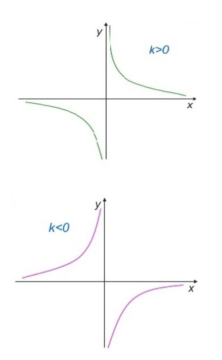

Обернена пропорційність
Означення: дві величини називаються обернено пропорційними, якщо із збільшенням
(зменшенням) однієї величини у кілька разів інша величина зменшується
(збільшується) у стільки ж разів.
Означення: функцією оберненої пропорційності називається функція виду у=k/х,
де k≠0 і kєR.
Розглянемо властивості функції у=k/х. Оскільки для знаходження значення у за
відомим значенням х необхідно виконати дію ділення, яка в множині дійсних чисел
не існує лише для ділення на нуль, то областю визначення цієї функції буде
множина дійсних чисел крім нуля. Отже, D(k/x)=(-∞;0)È(0;+∞).
Для визначення проміжків монотонності функції виберемо два довільних
значення аргументу х1 і х2 таких, що х1 > х2. Тоді 1/ х1 < 1/х2. Якщо k>0, то
k/х1 > k/х2, тобто f(х1) < f(х2). Це означає, що при k>0 функція оберненої
пропорційності спадає на всій області визначення. Якщо k<0, то із нерівності
1/х1<1/х2 випливає k/х1 > k/х2, тобто f(х1)>f(х2). Це означає, що при k<0 функція
оберненої пропорційності зростає на всій області визначення.
